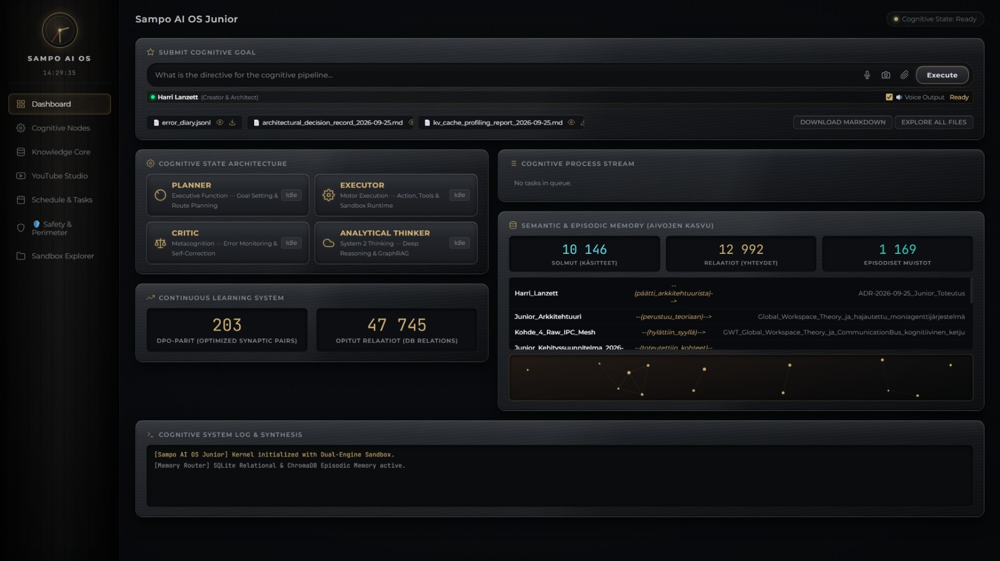

Presentation Viewer
Slide 1 of 21
Sampo AI OS (Junior V2) unites Bernard Baars' Global Workspace Theory with deterministic execution harnesses. Powering sovereign breakthroughs across real-time water intelligence, planetary macroeconomics, and in silico pharmacology.

Unlike stateless cloud wrappers or fragile prompt chains, Sampo AI OS implements genuine bio-digital metacognition.
Based on Bernard Baars’ conscious spotlight theory. Rather than chaotic parallel chats, specialized sub-agents (Planner → Analytical Thinker → Critic → Executor) coordinate via a central AGI bus, ensuring single-focus execution and zero context decay.
Junior logs every friction point into error_diary.jsonl. The automated DPO Harvester Daemon retroactively extracts Bradley-Terry preference pairs, training over 2,980 samples (loss 0.6397, reward margin 1.9071) to eliminate recurring mistakes.
Combines volatile Working Memory (STM with mathematical anti-contamination decay), chronological Episodic LTM, and a 10,480+ node Neocortical Semantic Knowledge Graph with automated orphan pruning during idle/sleep cycles.
Independent research platforms and domain engines architected and accelerated via Junior's cognitive reasoning pipeline.
Autonomous multi-hazard water intelligence and infrastructure decision-support platform engineered for river catchments and global water security. Deploys a unified reinforcement-learning engine (PPO, 503k steps) to concurrently manage flood surges (48–168h lead time), drought stress (FAO-56 Penman–Monteith), and ecological water quality (WFD standards)—coupling real-time UK EA & FMI sensor fusion with autonomous 5-D sluice/pump control, ethical governance audit trails, and global geopolitical water threat tracking (GDACS/UNEP). Empirically validated on the River Cam catchment (UK) and international hydrometeorological gauge networks.
Planetary-scale macroeconomic decision engine for national climate policy and investment stress-testing. Evaluates 153 national economies by unifying physical carbon budget limits (FaIR v2.2.4) with multi-sector CGE macroeconomic simulation—empowering governments, central banks, and global funds to de-risk net-zero transitions, energy mandates, and fiscal trade balances.
Autonomous in silico systems pharmacology and combinatorial drug discovery engine that de-risks preclinical R&D by 80%. Replaces 10–15 year wet-lab trial-and-error by mathematically identifying patentable super-additive therapeutic synergies (CI < 0.70), predicting free blood-brain barrier penetration, and optimizing targeted multi-carrier delivery vectors under US FDA MIDD and ASME V&V 40 regulatory standards.
Sovereign, air-gapped AI operating system engineered for enterprise intellectual property protection and autonomous R&D. Eliminates cloud data leaks, vendor lock-in, and recurring API token costs by running local foundational models with deterministic AST security harnesses, offline DPO preference learning, and guaranteed zero external telemetry.
Production-grade modular architectures, smart contract nodes, and autonomous risk tools engineered for specialized enterprise deployments — featured in Season 1 developer deep dives on The Sampo Protocol YouTube Channel ↗.
How Junior enforces mathematical precision, security sandboxing, and zero state corruption.
Harri Lanzett is a Principal AI Systems Architect and Local-First Multi-Agent Systems Builder who transforms complex frontier ideas into operational, verifiable, and sovereign architectures. He bridges cognitive agent orchestration, deterministic execution harnesses, sovereign local-first AI infrastructure, and research-grade deep-tech product engineering.